Postales elaboradas en los talleres con la frase "Para mí cuidar es…". Haz clic en una para verla más grande.
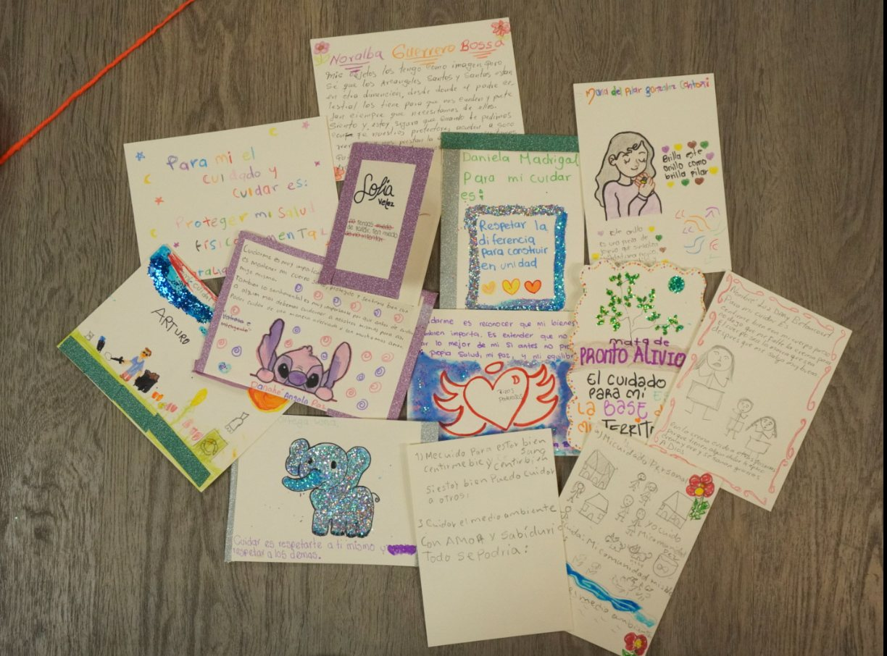
Las postales del tallerVista de conjunto de las postales elaboradas por las participantes.
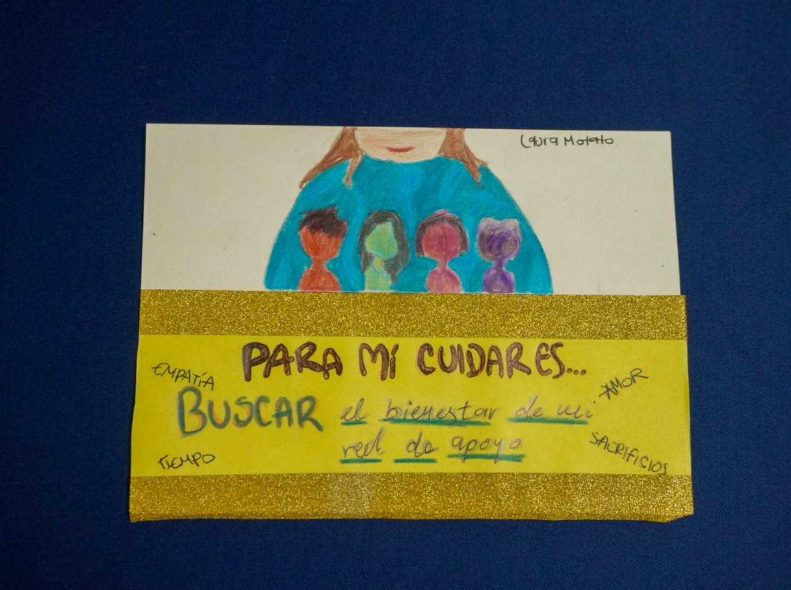
Laura Motato«Para mí cuidar es… buscar el bienestar de mi red de apoyo.» Alrededor, las palabras empatía, amor, tiempo y sacrificios.
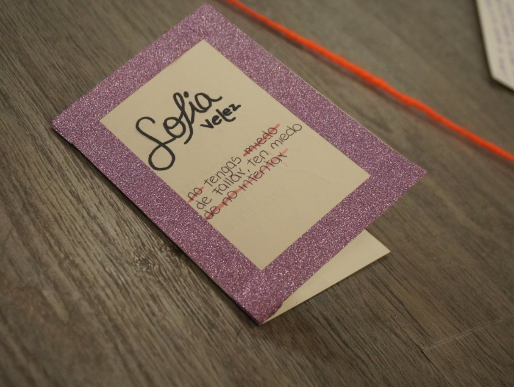
Sofía VelezUn mensaje sobre el miedo a fallar y el valor de intentarlo.Ver su perfil →
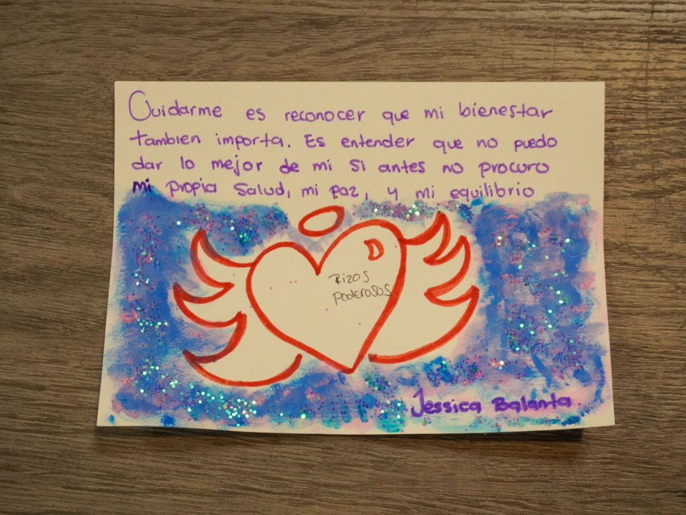
Jessica Balanta«Cuidarme es reconocer que mi bienestar también importa.» Dice que no puede dar lo mejor de sí sin procurar su salud, su paz y su equilibrio.Ver su perfil →
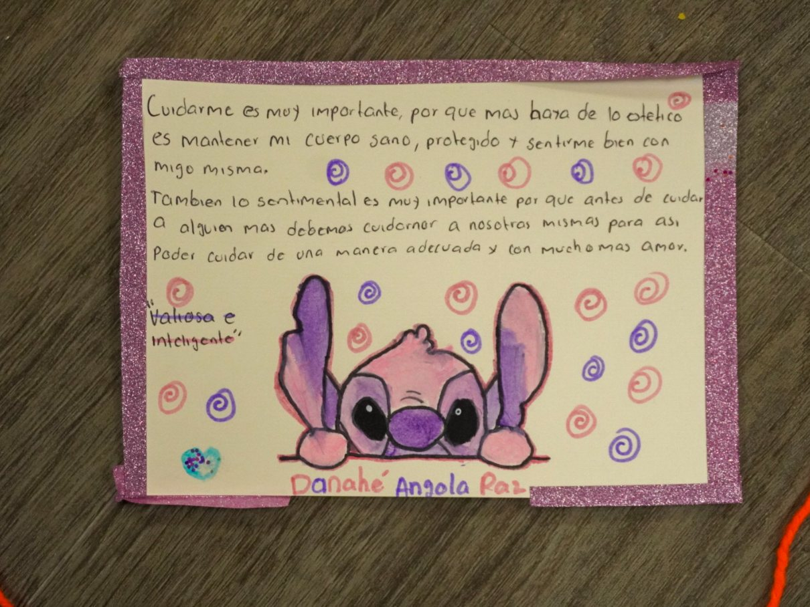
Danahé Angola«Antes de cuidar a alguien más debemos cuidarnos a nosotras mismas.» Cuidarse, escribe, es mantener el cuerpo sano y sentirse bien.Ver su perfil →
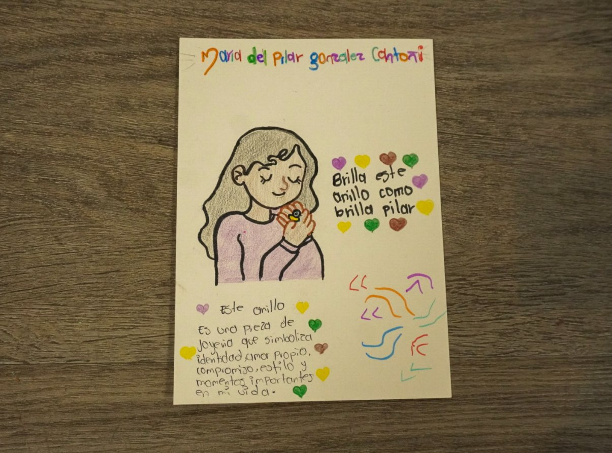
María del Pilar González«Brilla este anillo como brilla Pilar.» Un anillo que simboliza identidad, amor propio y momentos importantes de su vida.
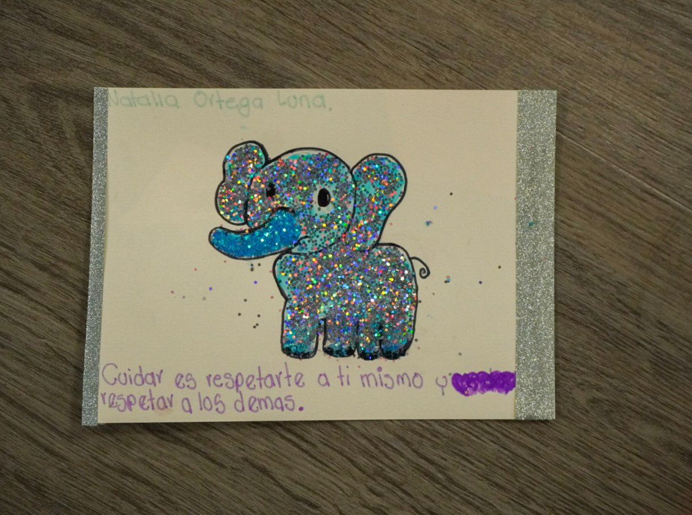
Natalia Ortega«Cuidar es respetarte a ti mismo y respetar a los demás.»Ver su perfil →
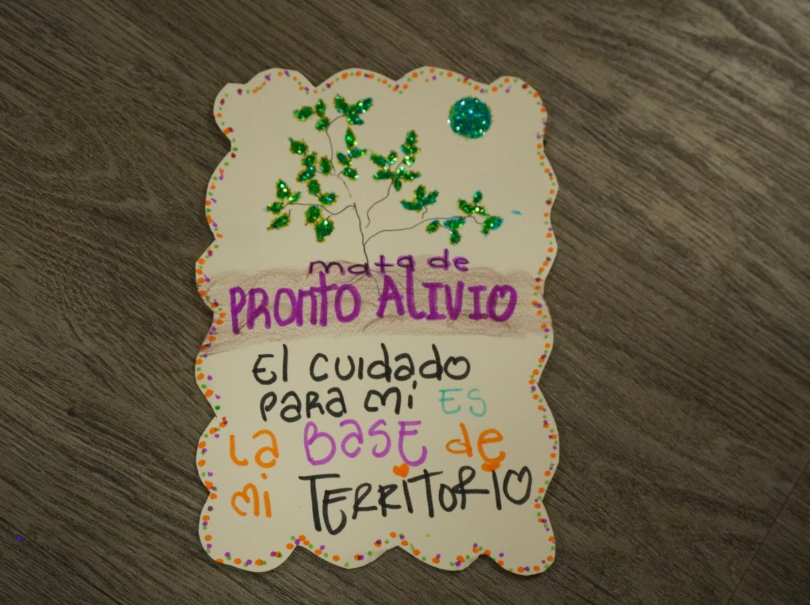
Mata de pronto alivio«El cuidado para mí es la base de mi territorio.» Autora por confirmar.
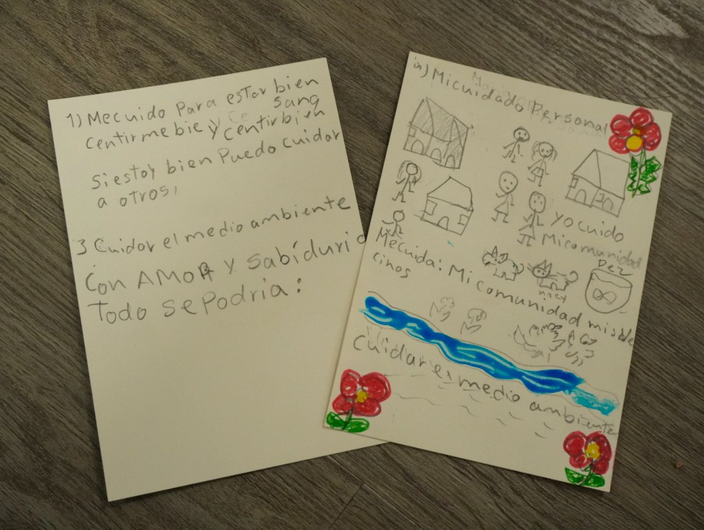
Cuidado personal y comunitarioDos postales: una sobre cuidarse para poder cuidar a otros y al medio ambiente, y otra que dibuja la comunidad, los vecinos y el río. Autoras por confirmar.
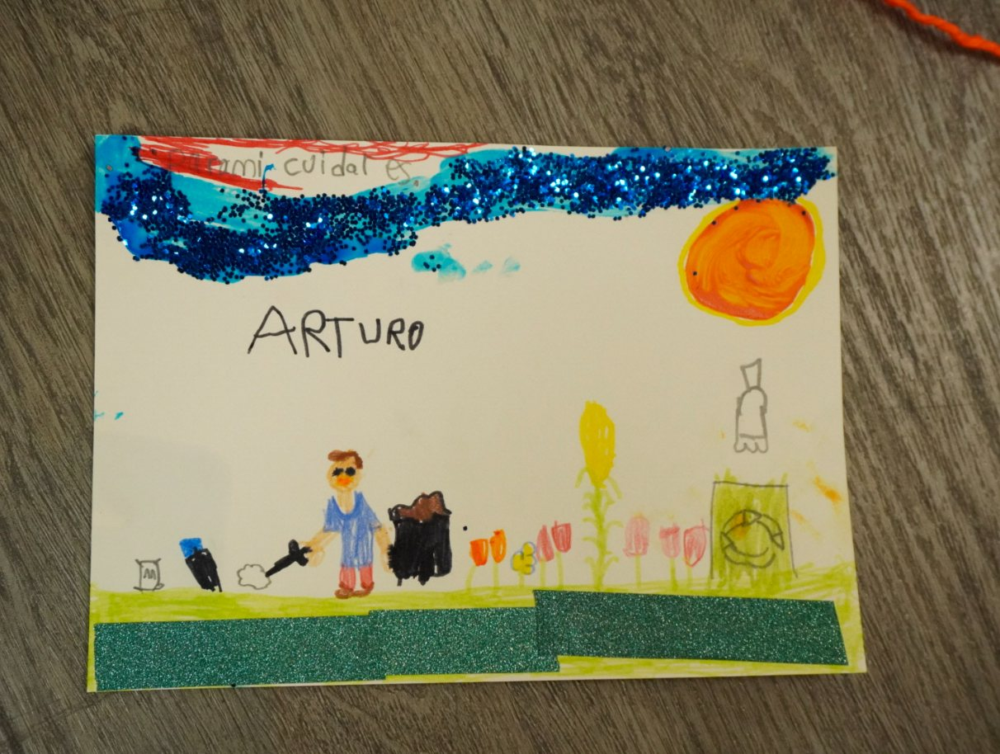
ArturoDibujo sobre cuidar el entorno: el sol, las flores, el reciclaje y una persona limpiando.
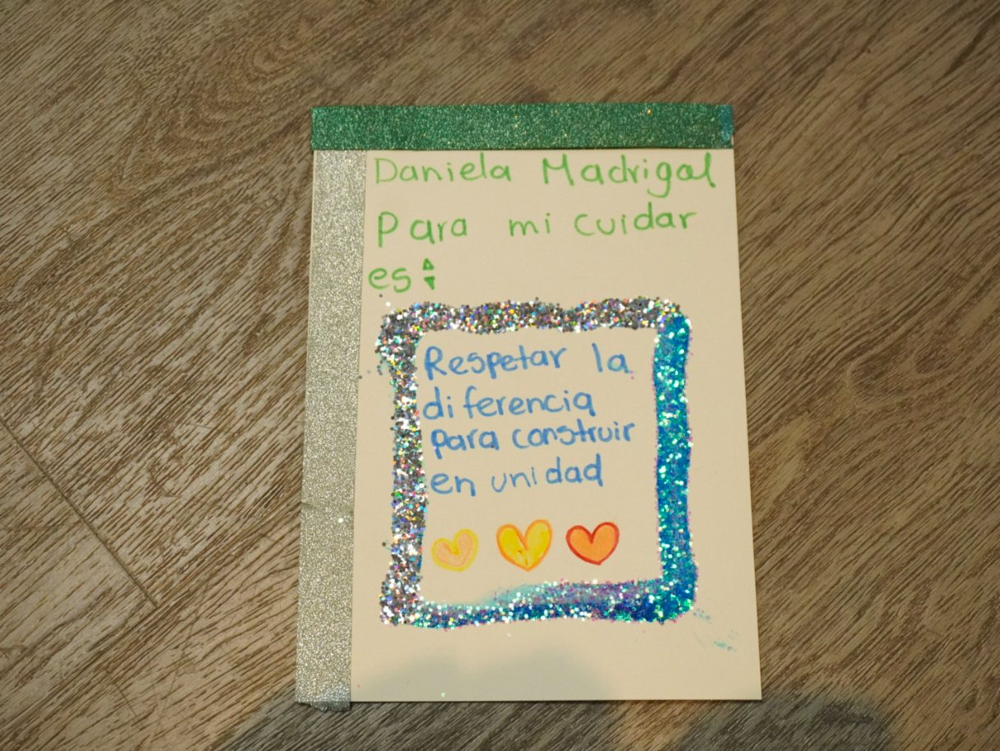
Daniela Madrigal«Para mí cuidar es respetar la diferencia para construir en unidad.»Ver su perfil →
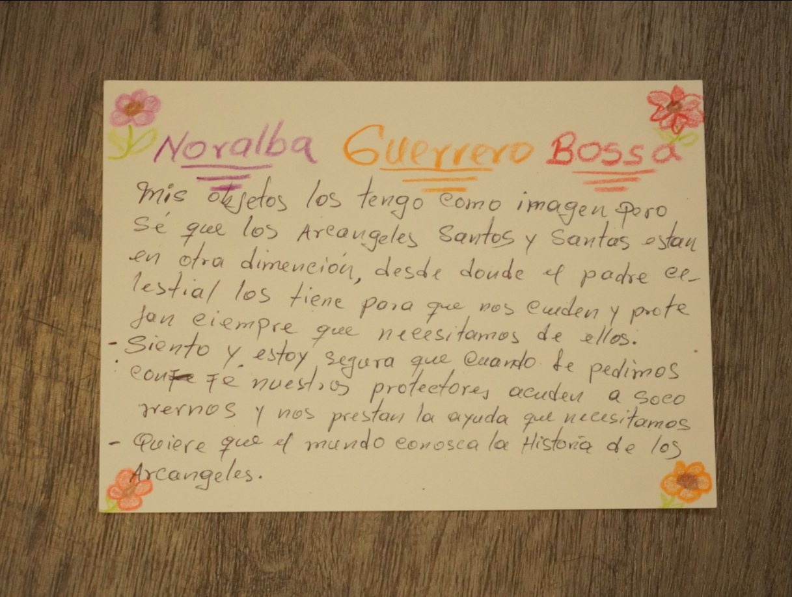
Noralba GuerreroHabla de sus objetos de fe y de la protección de los arcángeles, y quiere que el mundo conozca su historia.Ver su perfil →